Informe de Selenium Java
Suite b-eventos · tactical-calendar · 21/11/2026, 23:58:53 · 65.5 s
100%Tasa de éxito (13 de 13)
13Pasan
0Fallan
0Omitidos
| Pasa | TC-B01 Crear partida valida los campos obligatorios QA Admin MAD Captura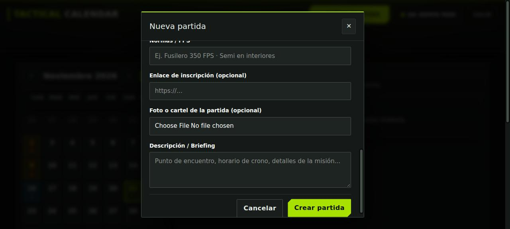 |
5.3 s |
| Pasa | TC-B01b Un admin crea una partida y aparece en la lista QA Admin MAD Captura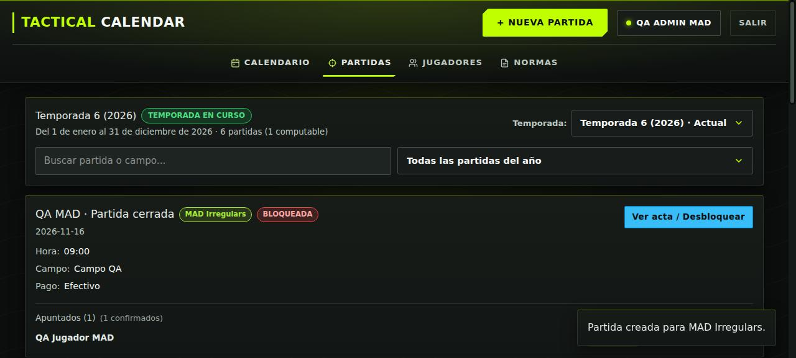 |
3.6 s |
| Pasa | TC-B02 Cancelar una partida sin contar asistencia QA Admin MAD Captura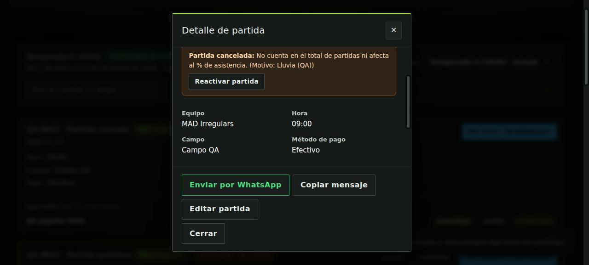 |
4.6 s |
| Pasa | TC-B02b Cancelar una partida contando asistencia permite pasar lista QA Admin FOE Captura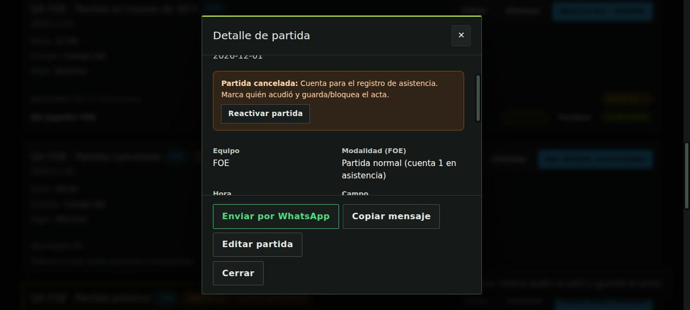 |
4.6 s |
| Pasa | TC-B03 Cerrar el acta bloquea la partida en solo lectura QA Admin FOE Captura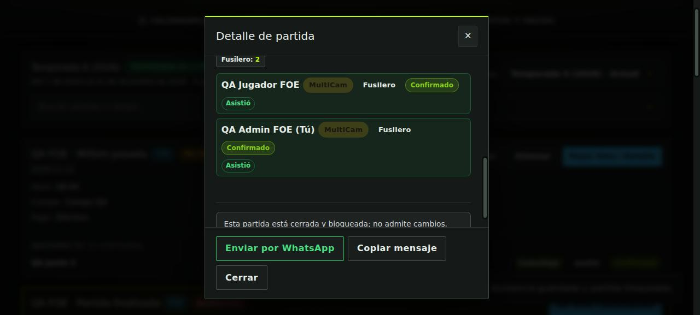 |
5.2 s |
| Pasa | TC-B04 Un jugador no puede editar ni cancelar partidas ajenas QA Jugador FOE Captura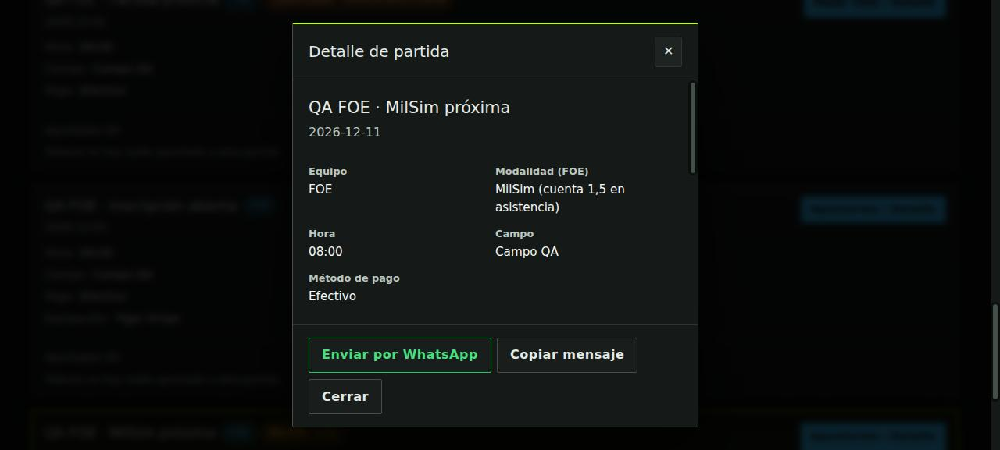 |
3.7 s |
| Pasa | TC-B05 Un admin edita una partida de su equipo QA Admin MAD Captura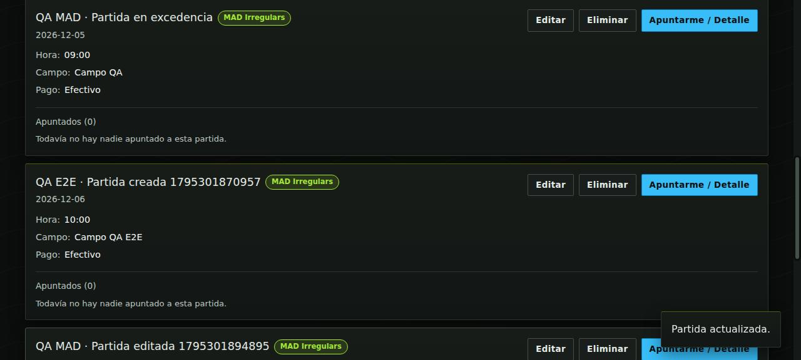 |
3.3 s |
| Pasa | TC-B06 Reactivar una partida cancelada QA Admin FOE Captura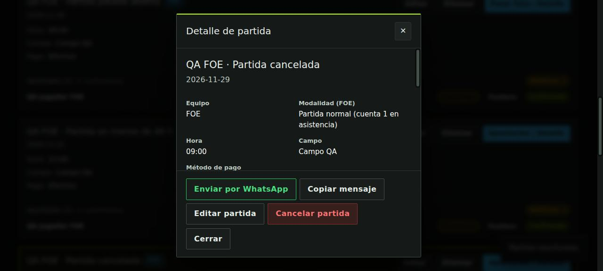 |
4.4 s |
| Pasa | TC-B07 Eliminar una partida pide confirmación y la borra del servidor QA Admin MAD Captura |
4.8 s |
| Pasa | TC-B08 Una partida cerrada no se puede editar ni eliminar desde la lista QA Admin MAD Captura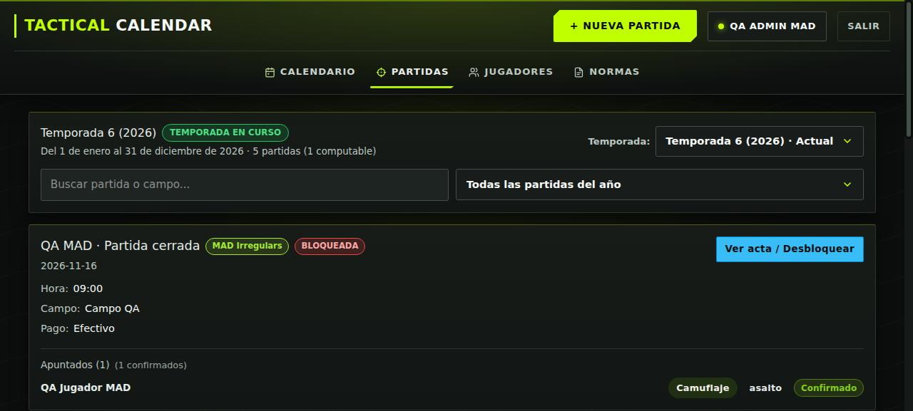 |
2.3 s |
| Pasa | TC-B09 Un jugador no puede pedir el desbloqueo de un acta QA Jugador MAD Captura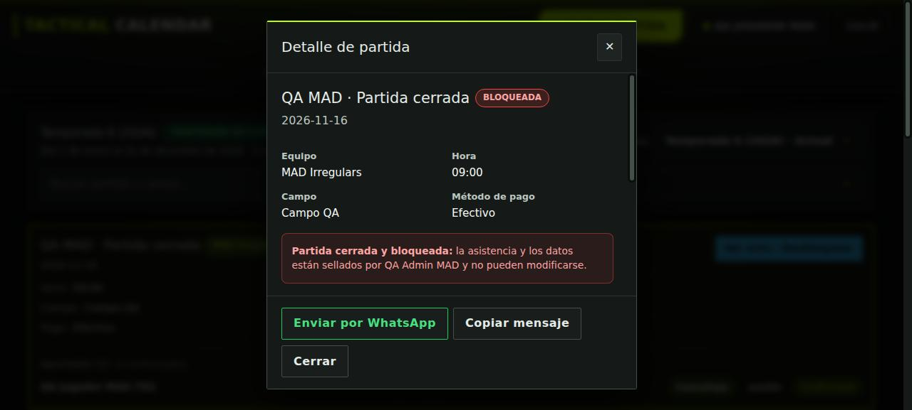 |
3.7 s |
| Pasa | TC-B10 Desbloquear un acta MAD: la pide su admin y la aprueba el super admin QA Admin MAD Captura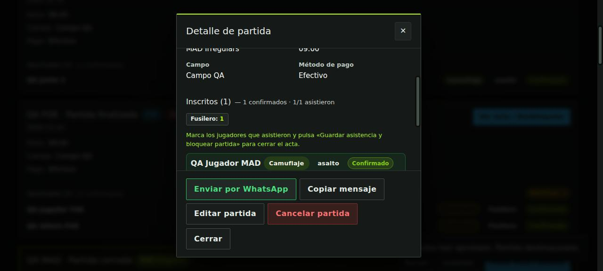 |
7.7 s |
| Pasa | TC-B11 Desbloquear un acta FOE necesita a los otros dos responsables y se puede cancelar QA Admin FOE Captura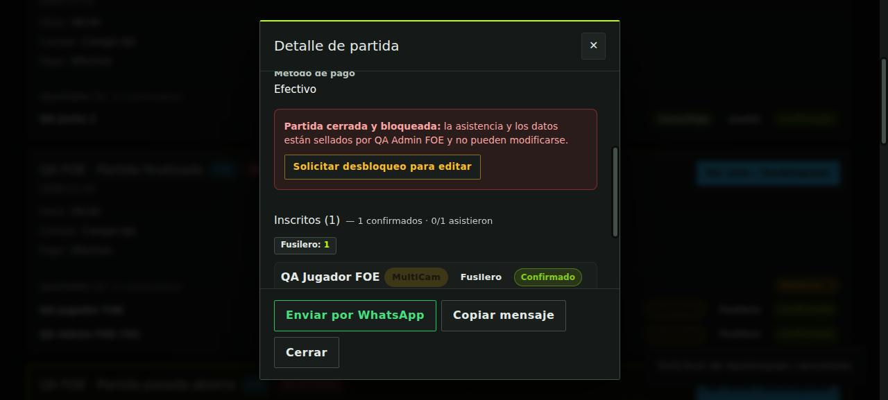 |
11.9 s |